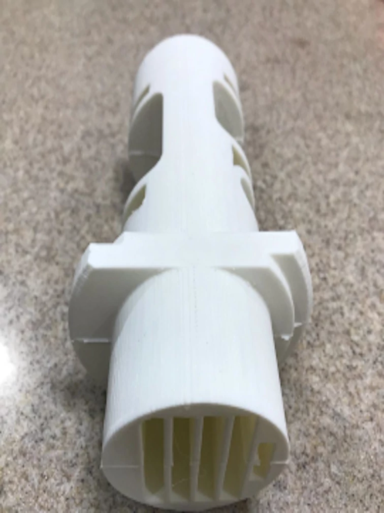
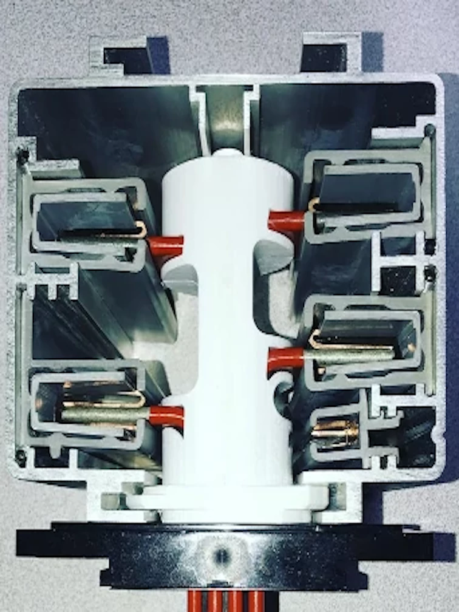
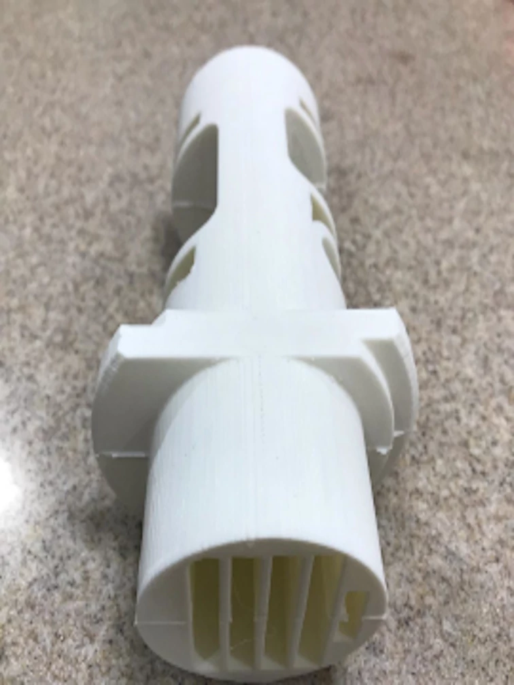
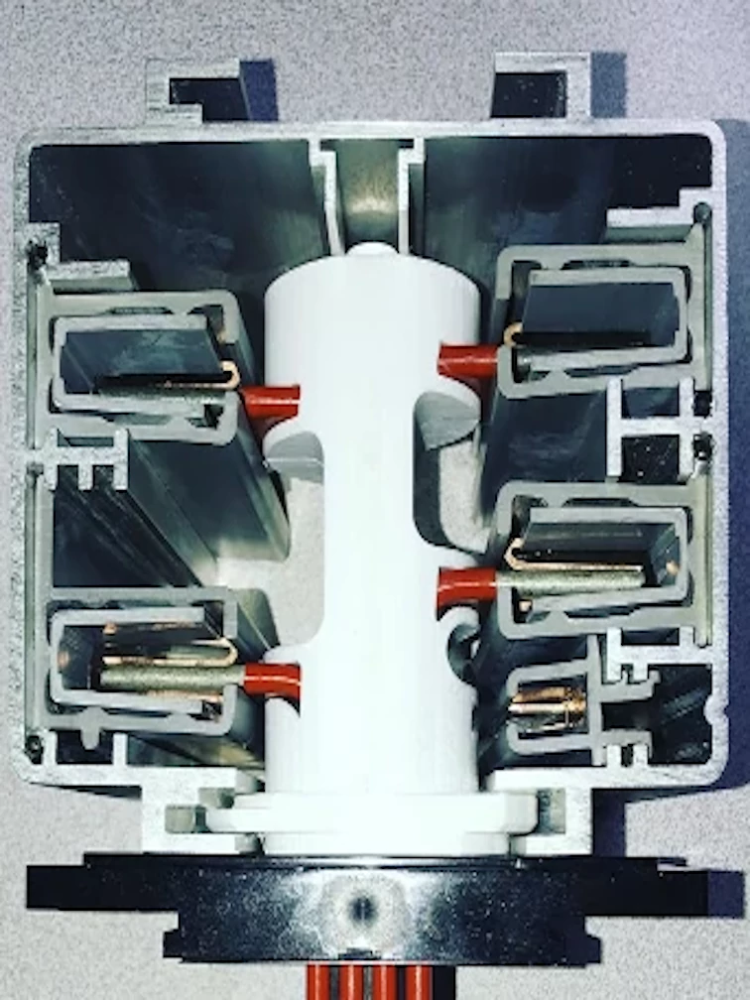

Starline Paddle Repair – Restore Your System Fast
Damaged paddles from arc-flash, shipping, or wear and tear? Our patent-pending paddle replacements restore your Starline busway system with durable, precision-manufactured solutions. Get back to peak performance – request a quote today!
Request a QuoteWhy Choose Our Paddle Repair Solutions?
Restore Your Starline Systems with Confidence
Our reliable and durable replacements ensure your system runs at its best, no matter the cause of damage.
- Advanced Materials: Made from impact-resistant, lightweight thermoplastics for durability in harsh conditions.
- Precision Manufacturing: Fused Deposition Modeling (FDM) delivers superior strength and layer adhesion compared to injection molding.
- Built to Last: High mechanical stress resistance with machine-grade screws for robust assembly.
- Reliable Performance: Robust materials and advanced processes ensure consistent operation in demanding environments.
- Customizable: Available in various colors to match your system, with easily sourced components to avoid OEM delays.
- Cost-Effective: Flexible customization without compromising quality, tailored to your system’s needs.
Technical Specifications
- Continuous Use Temperature (CUT): 50°C (122°F)
- Tensile Strength XY axis: 50 MPa (7,252 PSI)
- Tensile Strength Z axis: 37 MPa (5,366 PSI)

 



Pricing for Starline Paddle Replacements
Flexible and affordable rates to restore your system, big or small. Save more with bulk orders!
$100 per set.
Ready to repair? Contact us for a custom quote or order your paddle replacements today!
Get a QuoteFrequently Asked Questions
Q: What Starline systems are compatible with your paddles?
A: Our paddles are designed for Starline B400T5 series busways, ensuring seamless integration.
Q: Can you repair paddles damaged by arc-flash?
A: Yes, our replacements are built to restore systems affected by arc-flash, wear, or shipping damage.
Q: How quickly can I get a replacement paddle?
A: Order today, and we’ll deliver within 48 hours (subject to availability).